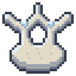

Reler parece estudar. Testar é o que fixa.
Em 2006, dois pesquisadores da Universidade Washington, em St. Louis, Henry Roediger e Jeffrey Karpicke, deram o mesmo texto a três grupos de estudantes.1 Um grupo leu o texto quatro vezes. Outro leu três vezes e fez um teste. O terceiro leu uma vez só e fez três testes, tentando lembrar o que tinha lido. Depois, todos fizeram uma prova: metade cinco minutos depois, metade uma semana depois.
Veja o que aconteceu. Troque entre os dois momentos:
O experimento
Quanto do texto cada grupo lembrava
Cinco minutos depois, quem releu ganha. É a armadilha: no curto prazo, reler parece funcionar melhor, e é essa sensação que engana. Uma semana depois, quem se testou lembrava 61% do texto, contra 40% de quem só releu.
Proporção aproximada de ideias do texto lembradas. Roediger e Karpicke, Psychological Science, 2006 (experimento 2).
Esse fenômeno tem nome: efeito do teste (em inglês, testing effect ou retrieval practice). Ele se repete há décadas, com textos, vocabulário, ciência e medicina. Dois anos depois, o mesmo grupo mostrou na revista Science que o que fixa o conteúdo é o esforço de buscar a resposta na memória, e não o tempo que você passa olhando para ele.2
Na medicina, o efeito foi testado com quem interessa: residentes. Num ensaio randomizado, residentes que estudaram um tema fazendo testes repetidos lembravam mais dele seis meses depois do que residentes que estudaram o mesmo material relendo.34 Uma meta-análise que reuniu centenas de comparações confirmou: testar-se vence reler em praticamente todas as idades, formatos e matérias.6
Cada vez que você tenta lembrar uma resposta, mesmo errando, o caminho até aquela informação fica mais forte. A questão é uma ferramenta de aprendizado, e não só de avaliação.
Estudo ativo e passivo: onde entram a videoaula e o livro
Vamos ser justos com a videoaula e com o livro: eles são importantes. É neles que você encontra o assunto pela primeira vez, entende a lógica de uma classificação e vê o raciocínio de quem conhece o tema. Sem essa primeira exposição, a questão vira chute.
O problema é parar neles. Assistir e ler são formas de estudo passivo: a informação entra, mas você não é obrigado a buscá-la de volta. E o cérebro é ótimo em confundir familiaridade com domínio. Você reconhece a classificação de Garden quando ela aparece na tela, e isso parece saber. Na prova, porém, ninguém mostra a classificação: você precisa trazê-la de volta sozinho.
Um estudo de Harvard mediu exatamente isso.14 Os alunos tiveram aulas expositivas e aulas ativas (com problemas para resolver) sobre o mesmo conteúdo. Nas aulas ativas eles aprenderam mais, mas sentiram que aprenderam menos. O esforço de pensar parece desconfortável e passa a impressão de que você não está indo bem. Os pesquisadores Robert e Elizabeth Bjork chamam isso de dificuldade desejável: o esforço que incomoda é o mesmo que fixa.17
Uma meta-análise de 225 estudos, publicada na PNAS, comparou aulas tradicionais com aulas de aprendizado ativo em ciências: a reprovação foi cerca de 1,5 vez maior nas aulas só expositivas.15
| Recurso | Tipo | Para que serve | O que não resolve sozinho |
|---|---|---|---|
| Videoaula | Passivo | Primeiro contato, raciocínio de quem ensina | Saber se você consegue usar o conteúdo |
| Livro e resumo | Passivo, com marcações ativas | A fonte: classificações, indicações, números | Dizer o que priorizar quando o tempo é curto |
| Questões comentadas | Ativo | Fixar, achar lacunas, treinar a decisão de prova | Ensinar um tema do zero sem nenhuma leitura |
| Flashcards | Ativo | Fatos curtos: números, epônimos, inervações | Raciocínio clínico e conduta |
| Prova anterior inteira e simulado | Ativo | Treinar o evento da prova: tempo, cansaço, ordem | Corrigir um assunto específico |
A conta que funciona é simples: pouca exposição, muita recuperação. Leia ou assista o suficiente para entender, e passe a maior parte do tempo tentando lembrar, com questões e revisões.
O que a ciência diz, técnica por técnica
Em 2013, cinco psicólogos analisaram centenas de estudos sobre as dez técnicas de estudo mais usadas por estudantes e deram uma nota de utilidade a cada uma.5 Só duas receberam a nota máxima: fazer testes e espaçar o estudo no tempo. Reler, grifar e resumir, as preferidas de quase todo mundo, ficaram com nota baixa.
Espaçar: a mesma hora rende mais se for dividida
Estudar um tema em três sessões separadas por dias fixa mais do que estudar o mesmo tema por três horas seguidas. Uma síntese de mais de 300 experimentos mostrou que o efeito aparece de forma consistente e que o melhor intervalo cresce com o tempo que você precisa guardar a informação.7 Quem estuda para uma prova daqui a um ano precisa de revisões cada vez mais espaçadas.
Errar ensina, se vier o porquê logo depois
Tentar responder antes de saber a resposta, e errar, melhora o aprendizado da explicação que vem depois.9 O erro prepara o terreno. Por isso o comentário importa tanto quanto a questão: errar e não ler o porquê é desperdiçar a parte mais valiosa.
Acertar no chute também precisa de revisão
Quando você acerta com pouca segurança, a tendência é passar direto. Um estudo mostrou que ler o comentário justamente nesses acertos inseguros melhora muito a retenção.10 Acerto no chute conta na nota, mas não na memória.
Misturar assuntos treina o reconhecimento
Fazer só questões de joelho num dia e só de coluna no outro dá a sensação de fluência. Misturar os assuntos (o chamado estudo intercalado) obriga você a reconhecer qual conhecimento usar, que é exatamente o que a prova pede.1112
Flashcards: bons para o que é curto
Em estudantes de medicina americanos, quem mais usou flashcards de recuperação teve, em média, nota maior na prova de licenciamento (o Step 1).16 É uma associação, e não prova de causa, mas combina com tudo acima. O cuidado é com o tempo de criar os cartões: montar baralhos do zero consome horas que poderiam ir para as questões. Baralhos prontos, feitos a partir do que cai, resolvem isso.
Experimente agora: uma questão real do TEOT
Chega de teoria. Esta é uma questão real do TEOT 2024, com o comentário do Orto Questões. Antes de responder, diga quanta certeza você tem. Depois leia o porquê de todas as alternativas, inclusive a certa.
Questão de prova
TEOT 2024 · QuadrilNa fratura do colo femoral submetida ao acesso lateral direto de HARDINGE não deve ser realizada dissecção proximal maior que 3 cm a 5 cm do trocanter maior, por risco de lesão do nervo
Antes de responder: quanta certeza você tem?
Você respondeu uma questão e saiu com quatro nervos e três vias: posterior e ciático, anterior e femoral, lateral direta e glúteo superior, e o glúteo inferior dentro do máximo. É isso que se chama discriminação por contraste: as alternativas erradas são exatamente as confusões que a banca usa nos próximos anos. Quem só lê a correta aprende um fato. Quem lê todas aprende o mapa.
O método em sete passos
Fazer questões não basta: o jeito de fazer muda o resultado. Toque em cada passo para abrir.
Leia o comando antes do caso
Em questões com caso clínico longo, comece pela última frase: a banca quer o diagnóstico, a conduta, a classificação ou a complicação? Sabendo o que procurar, você lê o caso caçando os dados certos, em vez de montar um raciocínio inteiro que não será perguntado.
Tente responder antes de olhar as alternativas
Cubra as alternativas por um segundo e pense na resposta. Gerar a resposta é recuperação de verdade; escolher entre opções é reconhecimento, que é mais fácil e fixa menos. Quando você já sabe o que procura, as alternativas viram conferência.
Marque a sua certeza: certeza, dúvida ou chute
Um acerto no chute e um acerto com certeza contam igual na nota, mas não na memória. Marcar a certeza separa o que você sabe do que você teve sorte, e mostra os erros com certeza, que são os mais perigosos: uma ideia errada bem firme.
 No Orto Questões, cada resposta leva a marca de Certeza, Dúvida ou Chute, e a questão chutada volta na revisão mesmo quando você acerta.
No Orto Questões, cada resposta leva a marca de Certeza, Dúvida ou Chute, e a questão chutada volta na revisão mesmo quando você acerta.Só troque a resposta com um motivo concreto
Pensar demais, o famoso overthinking, é real: reler o enunciado cinco vezes procurando pegadinha costuma criar dúvidas que não existiam. Mas atenção: a ideia de que "a primeira resposta é sempre a melhor" é um mito. Quando há um motivo, como um dado do caso que você não tinha visto, a troca vai mais vezes do errado para o certo.13 A regra é: troque por um dado novo, nunca por insegurança.
Leia o comentário de todas as alternativas, inclusive a certa
É o passo que separa quem faz muitas questões de quem aprende com elas. A alternativa certa confirma o conceito; as erradas mostram onde a banca tenta confundir. Em cada errada, pergunte: em que situação esta seria a resposta?
 Todo comentário do Orto Questões explica a correta e cada alternativa errada, com a referência do livro.
Todo comentário do Orto Questões explica a correta e cada alternativa errada, com a referência do livro.Escreva a regra em uma frase
Depois do comentário, resuma o que você aprendeu numa frase curta, do seu jeito: "na via de HARDINGE, não subir mais de 5 cm: nervo glúteo superior". Transformar a explicação em palavras suas é mais uma recuperação, e a frase vira material de revisão de véspera.
 As "Frases que caem" do site são isso: uma frase por questão de prova, tirada dos comentários.
As "Frases que caem" do site são isso: uma frase por questão de prova, tirada dos comentários.Agende a volta: revisão espaçada e caderno de erros
A questão que você errou hoje precisa voltar daqui a alguns dias, e de novo semanas depois, até virar acerto com certeza. Sem um sistema, isso não acontece: ninguém lembra de rever, sozinho, o que errou três semanas atrás.
 A Revisão do Orto Questões monta sozinha a lista do dia com o que você errou, chutou ou ficou em dúvida, no intervalo certo. O Caderno de erros guarda tudo por assunto.
A Revisão do Orto Questões monta sozinha a lista do dia com o que você errou, chutou ou ficou em dúvida, no intervalo certo. O Caderno de erros guarda tudo por assunto.
Mito ou fato? Vire as cartas
Seis crenças comuns entre residentes. Antes de virar, decida o que você acha.
A curva do esquecimento, e como achatá-la
Em 1885, Hermann Ebbinghaus mediu em si mesmo quanto esquecia de listas decoradas com o passar dos dias. A curva que ele desenhou, refeita com métodos modernos em 2015, mostra uma queda rápida nas primeiras horas e dias.8 A boa notícia: cada revisão no tempo certo devolve a lembrança e deixa a queda seguinte mais lenta.
Arraste os dias
Quanto sobra de um assunto estudado hoje
A linha vermelha é estudar uma vez e não voltar. A verde tem revisões em 1, 3, 7, 14 e 30 dias (os quadradinhos dourados).
Modelo ilustrativo, feito para mostrar a forma da curva; os números reais variam com o assunto e a pessoa. Baseado em Ebbinghaus (1885), Murre e Dros (2015) e Cepeda e colaboradores (2006).
Na prática, ninguém consegue calcular sozinho quando rever cada uma das centenas de questões que errou. É trabalho para um sistema: você responde, ele guarda e devolve no intervalo certo. No Orto Questões, a escada depende da sua certeza: a questão chutada volta em 1, 3, 7 e 14 dias; a respondida em dúvida, em 3, 7, 21 e 45; a errada entra na fila de revisão na hora. Ela sai da fila quando você acerta também no último degrau.
Quanto fazer por dia na residência
A resposta honesta é: o que cabe na sua escala sem quebrar. Uma meta modesta que você cumpre todo dia vence uma meta ambiciosa que quebra na primeira semana de plantão. Monte o seu dia:
Monte o seu dia
Que dia é hoje?
Dia comum: questões novas do assunto da semana e a revisão do dia.
Sugestão para começar, e não prescrição: cerca de 3 minutos por questão nova (responder e ler o comentário inteiro) e 1 minuto e meio por revisão.
Banco de questões e prova inteira são treinos diferentes
No dia a dia, as questões por assunto treinam o conceito: você estuda um tema e fixa com questões dele. A prova anterior inteira e o simulado treinam o evento: o tempo, o cansaço da questão 80, a ordem de resolução e a calma. Os dois são necessários. Uma prova anterior por mês desde o R1, e mais perto da prova, simulados com tempo marcado.
Como o Orto Questões foi montado em volta disso
O Orto Questões não é um curso de videoaulas. É uma plataforma de estudo ativo para a ortopedia: cada função do site existe para pôr em prática uma das ideias acima.
Questões oficiais comentadas
As provas do TEOT, do TARO e de outras bancas, cada questão com o porquê da correta e de cada alternativa errada, e a referência do livro.
Efeito do teste e discriminação por contraste
Revisão espaçada
O que você errou, chutou ou respondeu em dúvida volta sozinho no intervalo certo, até virar acerto com certeza.
Espaçamento e curva do esquecimento
Caderno de erros
Todas as questões erradas, por assunto, para refazer sem olhar o gabarito antes da prova.
Errar ensina quando o erro volta
Resumos da Biblioteca
Capítulos dos livros de referência resumidos por engenharia reversa: primeiro o que caiu, ano a ano, depois o texto na ordem da cobrança, com as questões no meio do texto.
Primeira exposição com propósito
Flashcards prontos
Baralhos feitos a partir do que cai, para números, epônimos e inervações. Sem perder horas montando cartão.
Recuperação para fatos curtos

Cronograma até a prova
A lista de cada dia, começando pelo que mais cai, com dia de plantão tratado como dia leve e uma reta final.
Constância e espaçamento
Simulados e Simulado Nacional
Provas com tempo marcado e, todo mês, um simulado com a sua posição entre os residentes.
Treino do evento da prova
Desempenho e temas que mais caem
Seu acerto por assunto e o peso de cada tema nas provas, para estudar primeiro o que mais rende.
Priorizar com dados

Atlas 3D
Um esqueleto em 3D: clique no osso e veja as fraturas e as classificações que caem, o trecho do resumo e as questões daquela estrutura.
Anatomia ligada à questão
Dá para começar grátis, sem cartão: crie a conta, faça um bloco de questões de um assunto e veja a revisão do dia seguinte se montar sozinha.
Procurando curso de ortopedia para R1 ou R2?
Todo ano, em março, uma turma nova de R1 entra na residência e faz a mesma busca: curso ortopedia R1, curso de ortopedia R1, treinamento ortopedia R1. No ano seguinte, a dúvida vira curso ortopedia R2. Quase sempre, por trás da busca, estão três necessidades diferentes:
- Entender a teoria. Aula e bibliografia resolvem; os resumos da Biblioteca ajudam a ler o livro sabendo o que procurar.
- Saber o que estudar hoje. Um cronograma que respeite a escala resolve.
- Lembrar no dia da prova. Só estudo ativo resolve: questões, revisão espaçada e provas anteriores.
Um curso de aulas cuida bem da primeira. O Orto Questões cuida da segunda e, principalmente, da terceira, que é a que mais pesa na nota e a que mais costuma faltar. Você pode usar os dois juntos: assistir à aula do tema e fechar o dia com as questões dele.
Para os intervalos do dia, conheça também as questões de ortopedia estilo TikTok: os Shorts, uma questão por tela no celular.
Se você está começando agora, leia também R1 de ortopedia: o que estudar no primeiro mês e o roteiro Estudo no R1.
Perguntas frequentes
Estudar por questões funciona mesmo?
Sim. É uma das técnicas mais estudadas em psicologia da aprendizagem. Tentar lembrar a resposta (o chamado efeito do teste) fixa mais a longo prazo do que reler o mesmo material, inclusive em residentes de medicina, e a revisão espaçada aumenta esse efeito.
Videoaula e leitura são perda de tempo?
Não. A aula e o livro são a primeira exposição: é onde você encontra o assunto. O problema é parar nelas. Depois de ler ou assistir, a questão é o que transforma o que você viu em algo que você consegue usar na prova e no plantão.
Existe curso de ortopedia para R1?
Existem cursos de aulas, e eles podem ajudar a organizar a teoria. O Orto Questões não é um curso de videoaulas: é uma plataforma de estudo ativo, com questões oficiais comentadas, revisão espaçada, resumos dos capítulos que mais caem, flashcards e cronograma. Funciona sozinha ou junto com o curso e a bibliografia que o seu serviço indica.
Curso ortopedia R2: o que muda em relação ao R1?
No R2 o volume aumenta e a prova fica mais próxima. Vale manter as questões por assunto, começar a fazer provas anteriores inteiras para treinar o tempo e usar a revisão espaçada para não perder o que foi estudado no R1.
Quantas questões fazer por dia na residência de ortopedia?
Depende da escala. Um bloco curto em dia de plantão e um bloco maior na folga costumam funcionar melhor do que uma meta fixa. Conta mais ler o comentário de todas as alternativas do que fazer muitas questões correndo.
Devo mudar a resposta quando fico em dúvida?
Só com um motivo concreto, como um dado do enunciado que você não tinha visto. Os estudos mostram que, quando há motivo, a troca costuma ir do errado para o certo: a ideia de que a primeira resposta é sempre a melhor é um mito. O que atrapalha é trocar por insegurança, sem razão nova.
Comece hoje com um bloco de questões
Crie a conta grátis, escolha um assunto e faça dez questões lendo o comentário de todas as alternativas. Amanhã, a revisão já vai estar esperando por você.
Referências
- Roediger HL, Karpicke JD. Test-enhanced learning: taking memory tests improves long-term retention. Psychological Science. 2006;17(3):249-255. PubMed
- Karpicke JD, Roediger HL. The critical importance of retrieval for learning. Science. 2008;319(5865):966-968. PubMed
- Larsen DP, Butler AC, Roediger HL. Test-enhanced learning in medical education. Medical Education. 2008;42(10):959-966. PubMed
- Larsen DP, Butler AC, Roediger HL. Repeated testing improves long-term retention relative to repeated study: a randomised controlled trial. Medical Education. 2009;43(12):1174-1181. PubMed
- Dunlosky J, Rawson KA, Marsh EJ, Nathan MJ, Willingham DT. Improving students' learning with effective learning techniques: promising directions from cognitive and educational psychology. Psychological Science in the Public Interest. 2013;14(1):4-58. PubMed
- Adesope OO, Trevisan DA, Sundararajan N. Rethinking the use of tests: a meta-analysis of practice testing. Review of Educational Research. 2017;87(3):659-701. Google Acadêmico
- Cepeda NJ, Pashler H, Vul E, Wixted JT, Rohrer D. Distributed practice in verbal recall tasks: a review and quantitative synthesis. Psychological Bulletin. 2006;132(3):354-380. PubMed
- Murre JMJ, Dros J. Replication and analysis of Ebbinghaus' forgetting curve. PLoS One. 2015;10(7):e0120644. PubMed
- Kornell N, Hays MJ, Bjork RA. Unsuccessful retrieval attempts enhance subsequent learning. Journal of Experimental Psychology: Learning, Memory, and Cognition. 2009;35(4):989-998. PubMed
- Butler AC, Karpicke JD, Roediger HL. Correcting a metacognitive error: feedback increases retention of low-confidence correct responses. Journal of Experimental Psychology: Learning, Memory, and Cognition. 2008;34(4):918-928. PubMed
- Kornell N, Bjork RA. Learning concepts and categories: is spacing the "enemy of induction"? Psychological Science. 2008;19(6):585-592. PubMed
- Rohrer D, Taylor K. The shuffling of mathematics problems improves learning. Instructional Science. 2007;35(6):481-498. Google Acadêmico
- Kruger J, Wirtz D, Miller DT. Counterfactual thinking and the first instinct fallacy. Journal of Personality and Social Psychology. 2005;88(5):725-735. PubMed
- Deslauriers L, McCarty LS, Miller K, Callaghan K, Kestin G. Measuring actual learning versus feeling of learning in response to being actively engaged in the classroom. Proceedings of the National Academy of Sciences. 2019;116(39):19251-19257. PubMed
- Freeman S, Eddy SL, McDonough M, Smith MK, Okoroafor N, Jordt H, Wenderoth MP. Active learning increases student performance in science, engineering, and mathematics. Proceedings of the National Academy of Sciences. 2014;111(23):8410-8415. PubMed
- Deng F, Gluckstein JA, Larsen DP. Student-directed retrieval practice is a predictor of medical licensing examination performance. Perspectives on Medical Education. 2015;4(6):308-313. PubMed
- Bjork EL, Bjork RA. Making things hard on yourself, but in a good way: creating desirable difficulties to enhance learning. In: Gernsbacher MA et al. (orgs.). Psychology and the real world. New York: Worth; 2011. p. 56-64. Google Acadêmico
Questão: TEOT 2024, quadril-0127, com trechos do comentário do Orto Questões. As referências do comentário estão na página da questão.